Passo a passo
- Abrir a tela. No menu Tabelas de apoio, clique em Unidade de Medida. A tela abre com o quadro "Pesquisa": Sigla, Descrição, Ativo (TODOS, SIM, NÃO), os botões PESQUISAR e LIMPAR e o link Incluir. Esta tela não tem botão IMPRIMIR. Clique em PESQUISAR para ver a lista.

A imagem mostra o título UNIDADE DE MEDIDA, os filtros Sigla, Descrição e Ativo, os botões PESQUISAR e LIMPAR e o link Incluir, sem linhas de resultado.
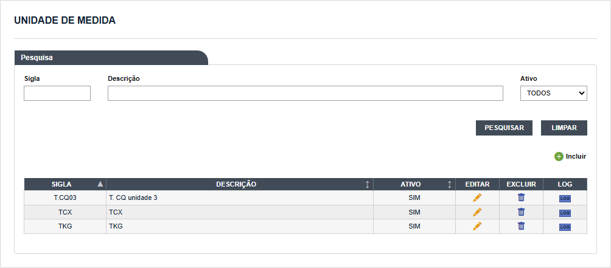
A imagem mostra a lista completa depois de PESQUISAR, com as colunas SIGLA, DESCRIÇÃO, ATIVO, EDITAR, EXCLUIR e LOG.
Os filtros Sigla e Descrição procuram parte do texto e não diferenciam maiúsculas (a busca "t.r2" achou T.R2U1 e T.R2U3). LIMPAR esvazia os filtros e também a lista. O filtro Ativo funciona (Ativo = NÃO sem registro mostra "A pesquisa não retornou nenhum resultado.").
- Incluir. Clique em Incluir. Abre o formulário "Dados" com Sigla*, Descrição*, Data do Cadastro (preenchida com o dia) e Ativo (Sim marcado), e os botões VOLTAR e SALVAR. O campo Justificativa não aparece na inclusão.
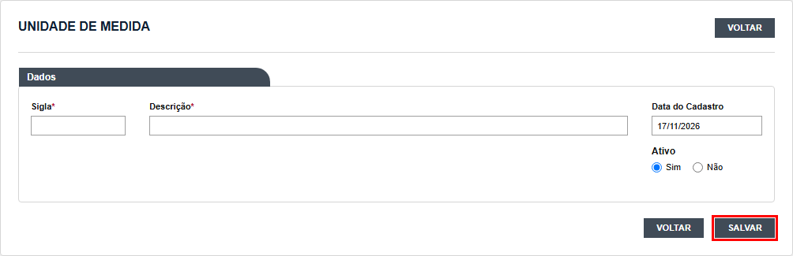
A imagem mostra o formulário em branco, com Sigla, Descrição, a data do dia e Ativo = Sim, sem o campo Justificativa.
- Salvar vazio (para conhecer a mensagem). Clique em SALVAR sem preencher. Aparece uma faixa rosa no alto do quadro com "Preencha os campos obrigatórios.".
A imagem mostra a faixa rosa inteira, com o texto legível "Preencha os campos obrigatórios.", e as mensagens sob os campos.
- Preencher. Digite a Sigla e a Descrição.
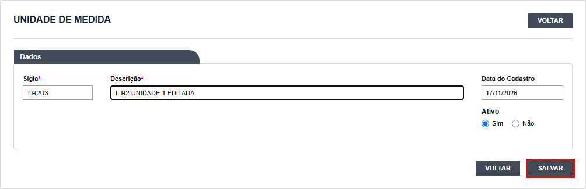
A imagem mostra a sigla "T.R2U3", a descrição preenchida e Ativo = Sim. A Sigla aceita até 8 caracteres (a digitação para no 8º) e a Descrição até 50.
- Salvar. Clique em SALVAR. Diferente de Motivos, não há pergunta de confirmação nem mensagem de sucesso: a tela grava e volta sozinha para a pesquisa (DV-CQ-N-002).
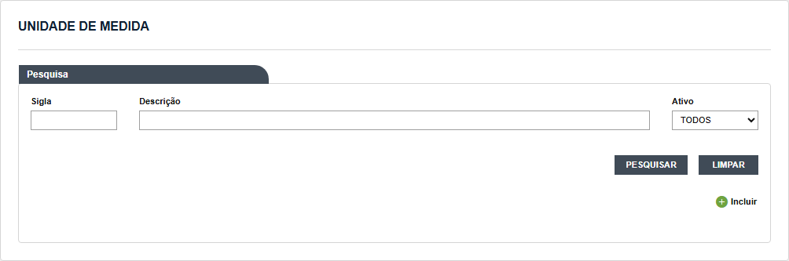
A imagem mostra a tela de pesquisa logo depois de gravar, sem pergunta de confirmação e sem nenhuma mensagem (API 201 na inclusão). Confirma o DV-CQ-N-002 para inclusão e alteração.
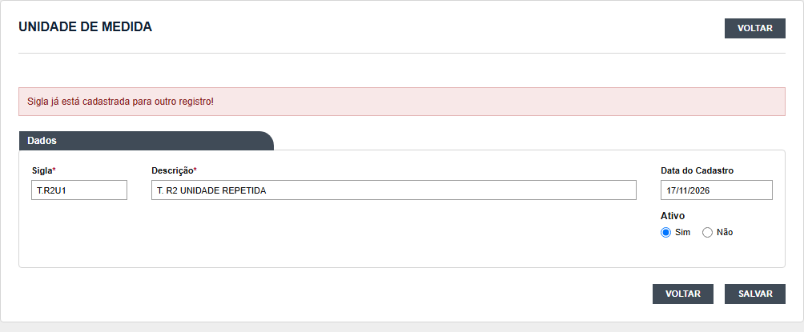
A imagem mostra a faixa rosa legível "Sigla já está cadastrada para outro registro!" ao salvar uma sigla que já existe (igual ao legado). A Descrição repetida é aceita: duas unidades com a mesma descrição foram gravadas (siglas T.R2U1 e T.R2U3), igual ao legado.
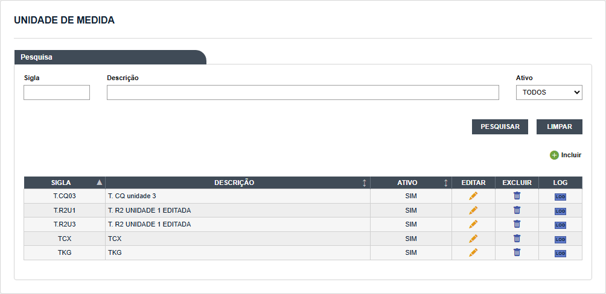
A imagem mostra as duas unidades com a mesma descrição e siglas diferentes na lista.
- Conferir na lista. Digite a sigla no filtro e clique em PESQUISAR. A lista mostra SIGLA, DESCRIÇÃO, ATIVO e as colunas EDITAR, EXCLUIR e LOG, com um ícone por coluna.
A imagem mostra a unidade T.R2U1 na lista, com os ícones de editar (lápis), excluir (lixeira) e log (selo azul com o texto LOG).
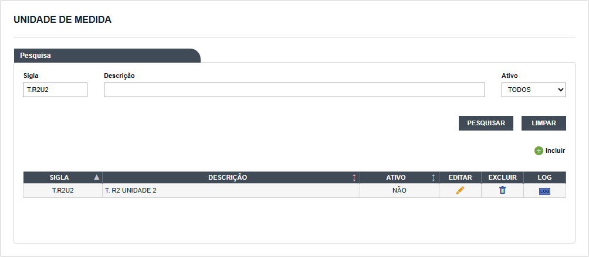
A imagem mostra uma unidade criada com Ativo = Não aparecendo como NÃO na lista.
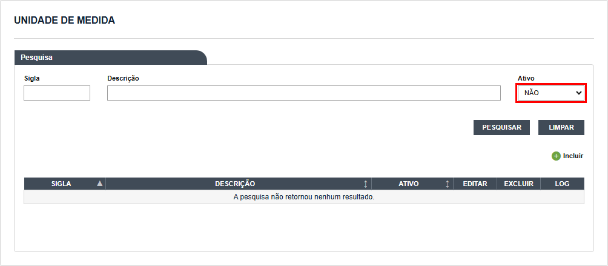
A imagem mostra o filtro Ativo = NÃO aplicado.
- Alterar ou inativar. Clique no lápis. O formulário abre com os dados e o campo Justificativa* (obrigatório na alteração). Mude o dado (para inativar, marque Não), escreva a justificativa e clique em SALVAR. Também aqui a tela volta à pesquisa sem mensagem. Salvar sem justificativa é recusado com a faixa rosa "Preencha os campos obrigatórios.". A justificativa aceita até 500 caracteres. A Sigla também pode ser alterada na edição, sem aviso (Ponto para validar com a área: a sigla pode mudar depois de criada e, mais ainda, depois de usada em regras?).
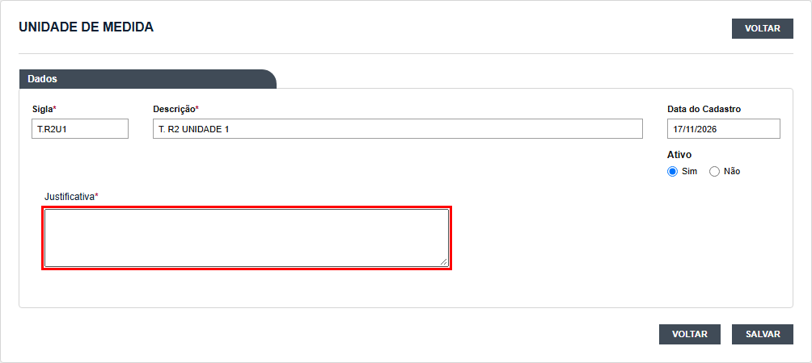
A imagem mostra o formulário de edição com o campo Justificativa* vazio, abaixo de Sigla e Descrição.
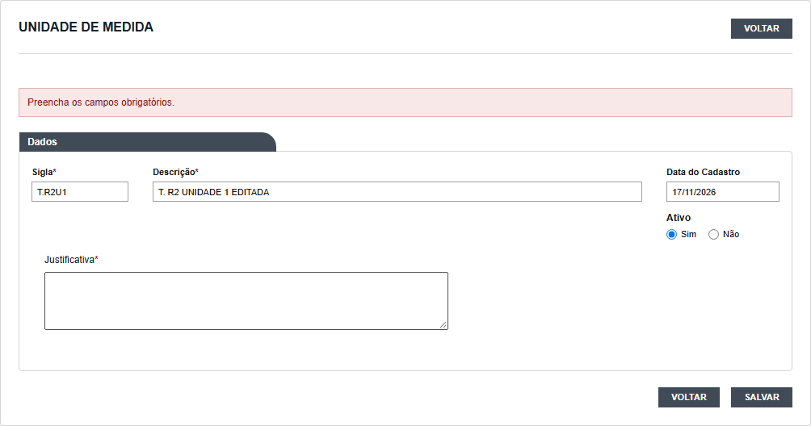
A imagem mostra a faixa rosa "Preencha os campos obrigatórios." ao salvar a edição com a Justificativa vazia: a alteração é recusada.
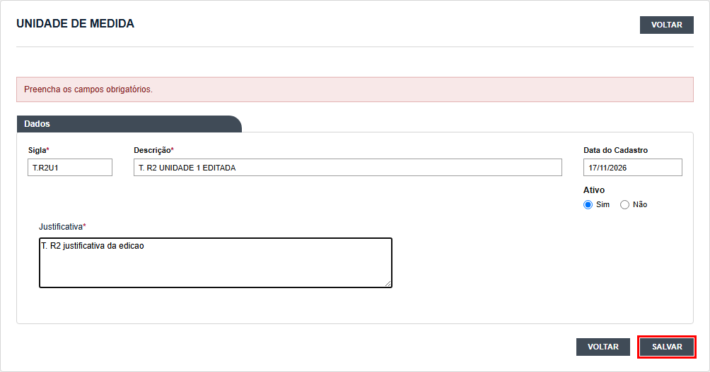
A imagem mostra a edição com a Descrição nova e a Justificativa preenchida.

A imagem mostra a tela de pesquisa logo depois de salvar a edição, sem mensagem de sucesso (API 204).
- Ver o histórico. Clique no selo azul LOG (coluna LOG; não é um relógio). A janela "LOG DE ALTERAÇÕES" mostra data, hora, Usuário (só o número), a justificativa e CAMPO / VALOR ANTERIOR / VALOR NOVO.
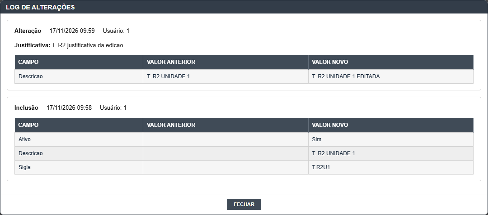
A imagem mostra a Alteração com a justificativa digitada e "Usuário: 1" (só o número) e a Inclusão. Os nomes dos campos aparecem sem acento ("Descricao") e há "Sigla".
- Excluir. Clique na lixeira. A caixa pergunta "Confirma a exclusão da unidade selecionada?" e traz o campo Justificativa*. Escreva a justificativa e clique em SIM. Enquanto a justificativa estiver vazia, o botão SIM fica esmaecido e desabilitado: não há clique possível. Com SIM, aparece a faixa verde "Unidade excluída logicamente." (a unidade deixa de aparecer na lista; a exclusão é lógica).

A imagem mostra a caixa "Confirma a exclusão da unidade selecionada?" com o campo Justificativa* e os botões SIM e NÃO.
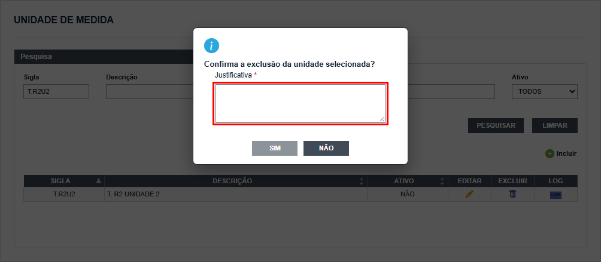
A imagem mostra o botão SIM esmaecido (desabilitado) enquanto a Justificativa está vazia.

A imagem mostra a faixa verde "Unidade excluída logicamente." no alto da tela de pesquisa.
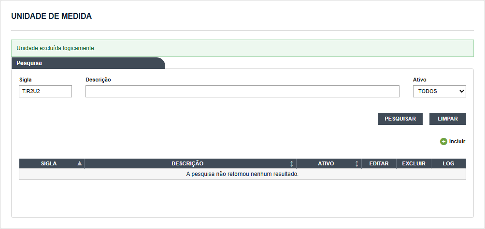
A imagem mostra a pesquisa pela sigla excluída sem resultado: "A pesquisa não retornou nenhum resultado.".
Excluir unidade em uso (T.CQ03, usada em duas regras): a exclusão é recusada, e o servidor devolve uma faixa vermelha no alto da tela, "Exclusão inválida, existem referências com outras tabelas.". A caixa de confirmação continua aberta por cima e tapa parte do texto; só depois de clicar em NÃO a faixa fica legível.
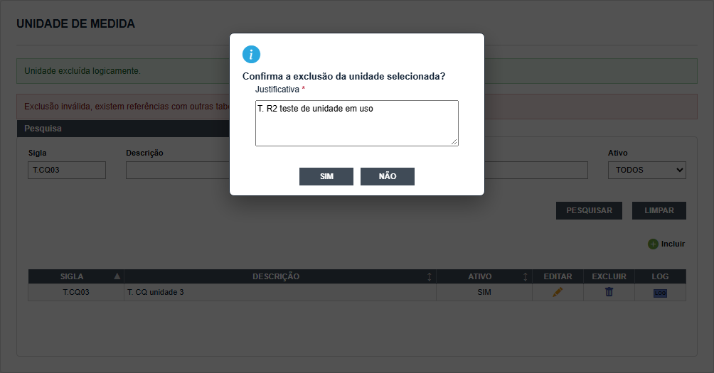
A imagem mostra a caixa de confirmação (justificativa preenchida, SIM e NÃO) aberta por cima da faixa vermelha, que fica parcialmente coberta. A faixa verde acima é sobra da exclusão anterior.
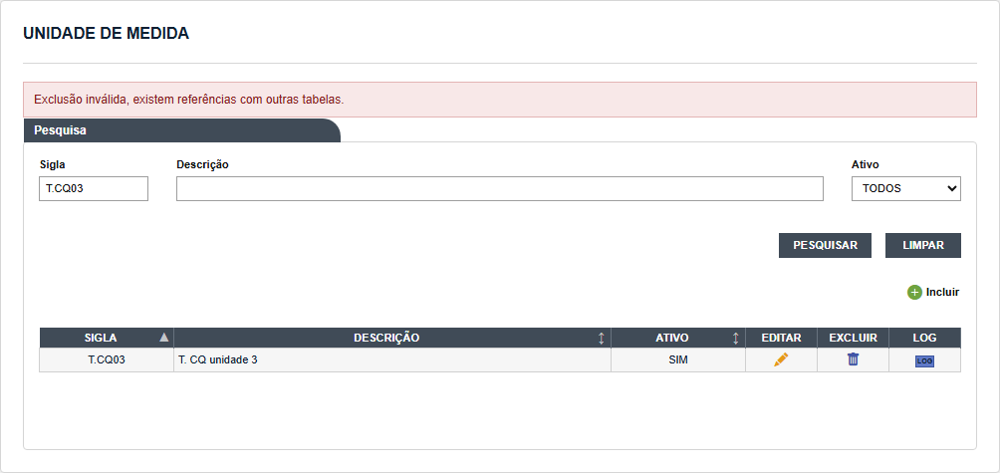
A imagem mostra a faixa vermelha legível "Exclusão inválida, existem referências com outras tabelas." depois de fechar a caixa; a unidade T.CQ03 continua na lista.